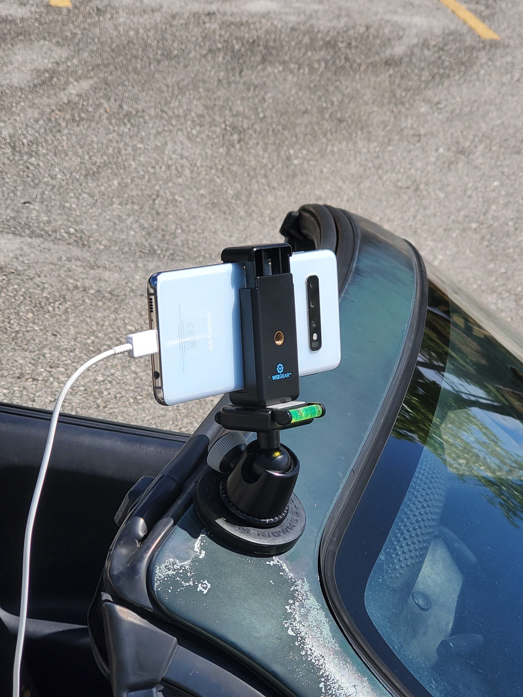

We need standardized
CRB damage surveys
- for monitoring changes over time and space, especially in response to control activities
- for detection of CRB in new geographic areas
Data Acquisition Options for CRB Damage Surveys
- direct visual observations
- videos or still images
- ground-based or aerial imagery
- Mansfield Sarah et al. 2023. [Assessment of coconut palm damage caused by coconut rhinoceros beetle](https://doi.org/10.1080/01140671.2023.2278791)

Data acquisition for automated ground-based CRB damage surveys

- Ten island-wide roadside surveys were done on Guam between 2020-10-22 and 2023-09-22.
- [Webmaps and data are available online](https://aubreymoore.github.io/Guam-CRB-web-maps).
- Results showed changes in percent of palms damaged over time:

### Rota survey 2020-10-29
- Two v-shaped cuts were detected and reported using iNaturalist
[1](https://www.inaturalist.org/observations/69576984), [2](https://www.inaturalist.org/observations/69534809).

### Majuro survey 2023-10-07
[tech report](https://aubreymoore.github.io/Majuro-tech-report-20231201/Majuro-tech-report.pdf) |
[interactive web map](https://aubreymoore.github.io/Majuro-CRB-damage-map-1/webmap/#12/7.1082/171.2072)
- Three vcuts were detected

- Jackson TJ et al. 2022. [Social media posts suggest that coconut rhinoceros beetle has established in the Western hemisphere.](https://doi.org/10.1111/jen.13083)
- Jackson, TJ et al. 2025. [Coconut rhinoceros beetle *Oryctes rhinoceros* confirmed in the Americas.](https://doi.org/10.1111/epp.70014)

Recent model improvements
- added a confidence score for each detected object
- changed base model
from Faster R-CNN to YOLOv11
- changed object type
from bounding boxes (rectangles) to segmentation (polygons)


### Comparison of damage surveys and pheromone trapping
- Estimated cost of island-wide CRB monitoring using automated damage surveys is an order of magnitude cheaper than pheromone traps.

### Comparison of damage surveys and pheromone trapping (continued)
- The relationship between CRB trap catch and CRB population density is unknown.
- Theoretically, trap catch approaches zero at high population density.
- Damage levels are probably better correlated with population density.
### Comparison of ground-based and aerial damage surveys
- aerial surveys provide precise coordinates; ground-based surveys provide approximate coordinates
- aerial surveys can be used anywhere except in no-fly zones; ground-based surveys can be used anywhere there are roads
- aerial surveys are expensive and hi-tech; ground-base surveys are cheap and low-tech
#### Public Access to Data and Code
- Internet Archive: [Images from six automated roadside surveys of CRB damage on Guam (about 96 GB)](https://archive.org/search?query=aubreymoore2013)
- Internet Archive: [Images from automated roadside survey of CRB damage on Majuro (14 GB)](https://archive.org/details/MajuroO1-2025-08-11)
- GitHub: [YOLOv11 instance segmentation training datasets and trained models](https://github.com/aubreymoore/crb-damage-detection-models)
- Colab: [Detect CRB damage using the latest model](https://colab.research.google.com/github/aubreymoore/crb-damage-detector-colab/blob/main/detect_and_annotate.ipynb)
Acknowledgments
Thanks to:
- The US Forest Service and the US Department of the Interior - Office of Insular Affairs for initial funding.
- Don Scott, Savan Visalpara, and Rush Tehrani at OnePanel Incorporated for developing the original object detectors and workflow.
- Christian Cayanan for doing the 10 surveys on Guam and one on Majuro.
- Mark Manglona for doing the survey on Rota.